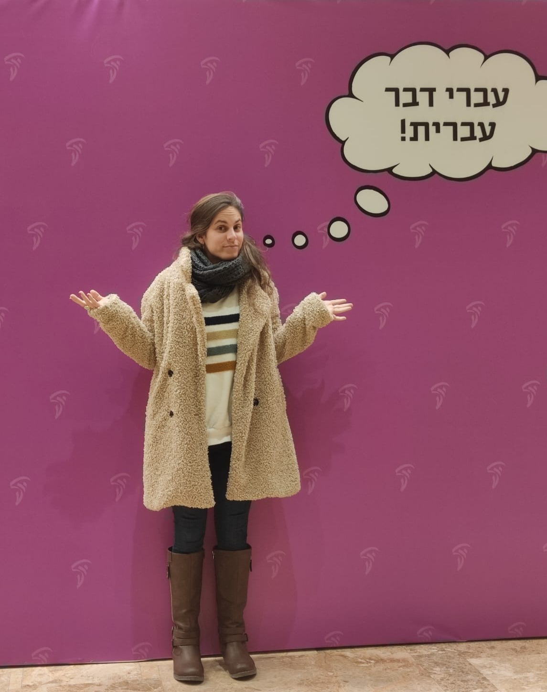

Embark on a vibrant Hebrew learning adventure where tradition meets modernity, and each lesson unfolds at your own rhythm. I believe in breaking down language barriers through immersive, enjoyable experiences that bring the rich tapestry of Israeli culture right to your doorstep.
Dive into a personalized learning journey tailored to fit your unique goals and interests. Whether you're starting from scratch or looking to polish your Hebrew skills, With my expert guidance, rooted in years of experience and a passion for teaching, ensures your path to fluency is both effective and enjoyable.
With me, learning goes beyond the alphabet and grammar. Immerse yourself in the vibrant world of Israeli music, explore the depths of local news, engage in lively conversations, and get a taste of everyday slang. It's not just about language; it's about connecting with a culture.
Join me and together, we'll embark on a journey through the Hebrew language, unlocking new opportunities for personal and professional growth. Ready to start your Hebrew adventure? Let's make it memorable.
I was a student of Tamar’s for a year and I cannot recommend her enough! She worked with me to learn Hebrew in a way that worked for me . I felt my vocabulary and grammar improved so much. Tamar is an excellent teacher. She will meet you where you are at but will also push you in the best way to improve your knowledge of the Hebrew language! Thank you Tamar for all the help this year. I feel so much more confident in my skills!
Amazing, knowledgeable, personable Tamar Kfir tutors my husband and myself in our home in Jerusalem. Tamar allows us to learn at our own pace and she devotes time for us to practice our skills. I have an M.A. degree in Education and I find Tamar Kfir to be a 5-star language teacher.
So happy I found Tamar, she’s the best Hebrew teacher I could have wished for! :-) I started from zero and have come to a point where I feel really comfortable around my partner’s Israeli family when it comes to understanding and taking part in conversations - Thank you so much, dear Tamar, for being such an amazing and natural teacher and having become a good friend, too!
Tamar is an incredibly talented teacher! She is very experienced, incredibly engaging and uses many different approaches - grammer, vocabulary, conversation, music, and others media to learn in different ways. I learned so much in my year being tutored by her and immediately noticed an improvement in my fluency and confidence - plus lessons were always interesting and fun! She's a true mentch and a wonder tutor!
Tamar is the language teacher we all wished we had in school. I have been taking lesson's with Tamar for over three years and have developed an incredible chemistry with her. She has the uncanny ability to finesse your Hebrew language development effortlessly and painlessly. We have covered just about every topic under the sun, sports, military, medical, political, religious, etc. I consider myself a mid- to upper- intermediate speaker who can hold a conversation with a native Israeli on just about any topic. I am no longer intimidated by this difficult language. Tamar has given me the confidence in speaking and understanding Hebrew to be able to hold my own in any situation.
I've been studying Hebrew with Tamar for nearly four years and recommend her highly to anyone wanting to learn Hebrew in a relaxed, fun way. Tamar is flexible and focuses on how Hebrew is spoken in real life, including in areas relevant to your special interests.